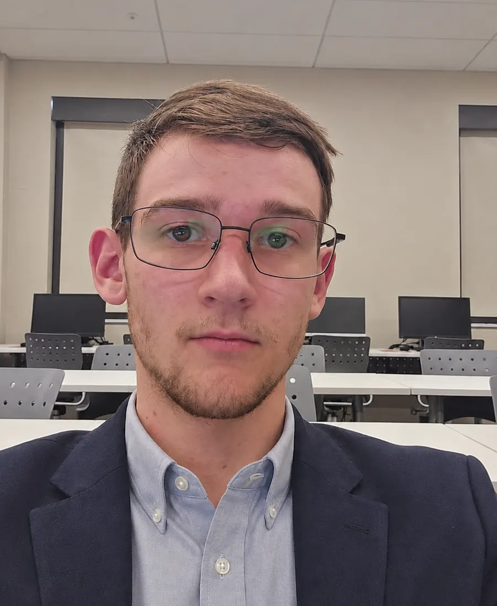

BACKGROUND
About me.
Mechanical engineering, fabrication experience, and technical skills.
EDUCATION
CU Boulder / Colorado Mesa University
B.S. Mechanical Engineering through the Engineering Partnership Program. Expected graduation May 2028, with a 4.0 GPA.
Technical interests include mechanical design, aerospace hardware, manufacturing, and propulsion. Strongest project experience involves translating CAD into functional prototypes and investigating unexpected test results.
Download Resume
EXPERIENCE
Work
Stagehand Oak View Group
Support live-event load-in and teardown, working with crews of 10+ and large production equipment under time and safety constraints.
Scene Shop Technician Colorado Mesa University
Fabricated stage scenery and shop infrastructure. Independently designed an 18-foot workstation and coordinated construction of four mobile worktables.
Treasurer CMU Biking Club
Help manage club funds, fundraising, and activities.
TECHNICAL SKILLS
Tools and methods
Design and analysis
SolidWorks CAD, assemblies, engineering drawings, static FEA, Flow Simulation, mechanisms, tolerances
Fabrication and testing
FDM 3D printing, physical prototyping, calipers, shop power tools, woodworking, wind-tunnel testing
Computing and instrumentation
MATLAB, Excel, introductory C++, oscilloscopes and signal generators (coursework)
Recognition
4.0 GPA; President's List (three semesters); Provost's List (Spring 2026)
BEYOND THE CLASSROOM
Life outside engineering
Outside of coursework, I enjoy mountain biking, skiing, photography, and spending time outdoors.